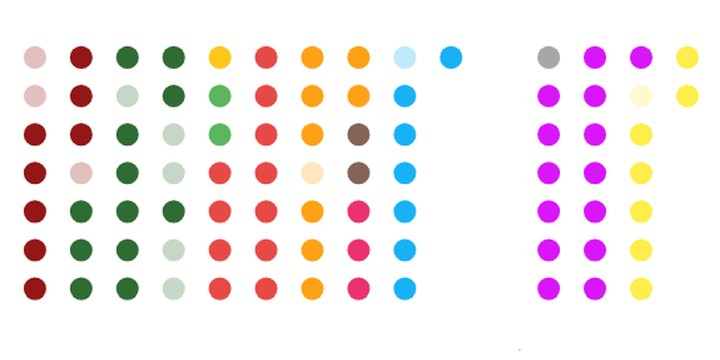
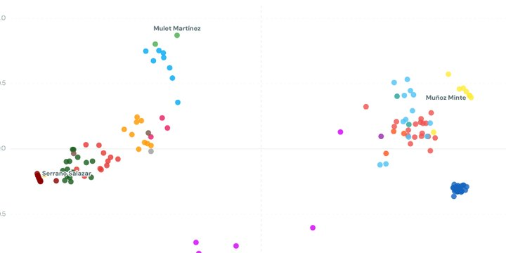
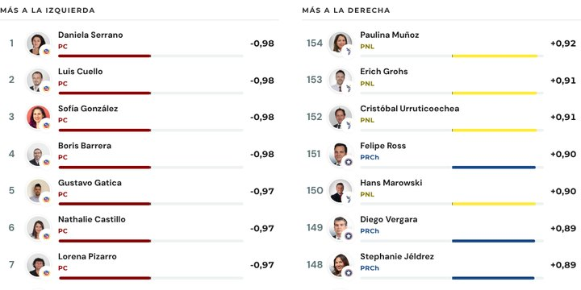

Cámara y Senado 2026-2030, analizados con los métodos digitales del Centro de Estudios Públicos.
Un conjunto de herramientas que leen las votaciones y los discursos del Congreso, y las publicaciones que salen de ellas.

Visualización de cada votación en la Cámara de Diputadas y Diputados.

Análisis de las votaciones del período legislativo 2026–2030.
Una ficha por cada diputada, diputado y senador del período 2026-2030, con su posición en el mapa de votaciones y su comportamiento en la Sala.

Cada diputada y diputado, y cada partido, ordenados en las medidas de su comportamiento en la Sala.
Votaciones en que la Sala estuvo casi toda de acuerdo y alguien se salió de la fila. Registramos el hecho; el porqué queda abierto.
El Monitor Legislativo reúne las votaciones de la Cámara y del Senado desde 2002 y las convierte en algo que se puede mirar: quién vota con quién, quién se sale de la fila y cómo se ha movido el eje izquierda-derecha en siete períodos. Los datos vienen de las API de datos abiertos del Congreso y se actualizan todos los días. Las posiciones se estiman con W-NOMINATE (Poole y Rosenthal, 1985) en R.
Belmar, F., Rozas, J., Henríquez, P. y Mascareño, A. (2026). Monitor Legislativo [plataforma de visualización]. C22, Centro de Estudios Públicos. https://c22cepchile.cl/monitor-legislativo/
Cada visualizador acredita a sus autores en su propia ficha. Los datos de origen son públicos y vienen de las API de datos abiertos de la Cámara de Diputadas y Diputados y del Senado.